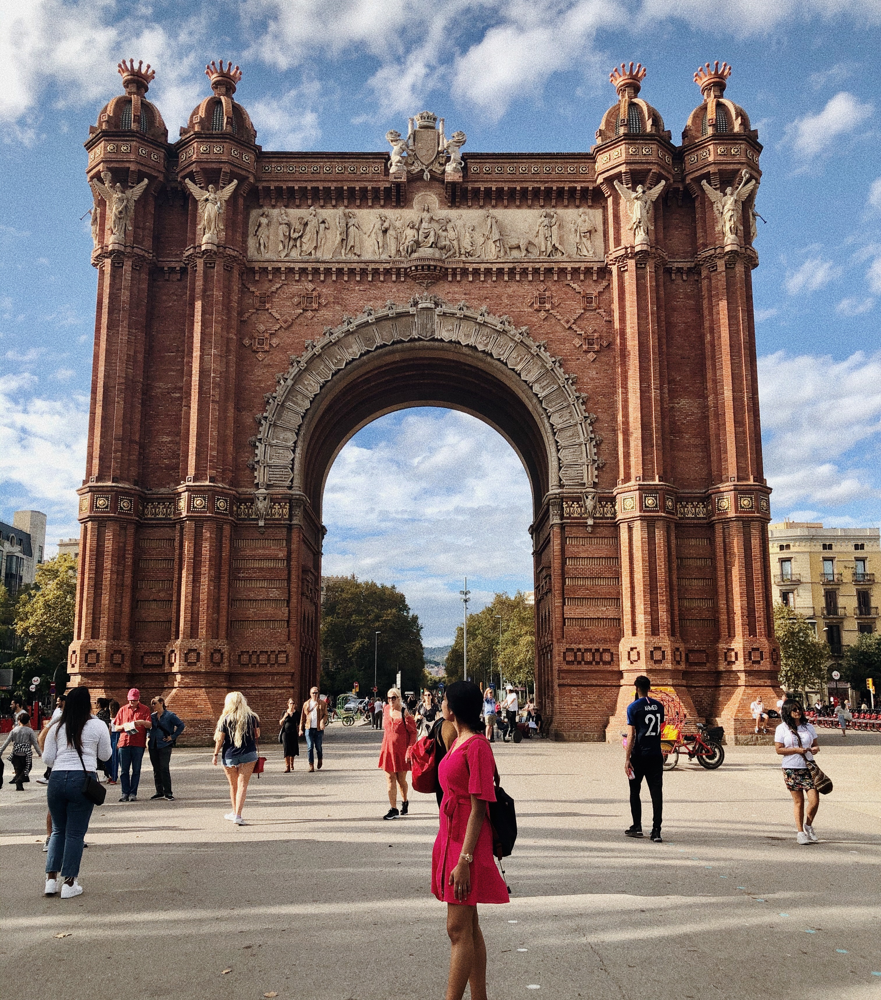

 Hi, I'm Raveena
I'm a senior at St. John's University studying computer science with a double minor in business administration and
international studies. As a senior, I've taken most of the required computer science classes and am mainly taking electives now.
One of my favorite computer science classes would be Data Security and Cryptography, which I am currently taking.
My favorite class I've ever taken in college is GLOBE, which is in the business school. In this class I learned about microfinance
in the context of working with entreprenuers in developing countries. The highlight of my college career
would be studying abroad last semester in Ireland, France and Italy.
Internship
Technology Consulting Intern, Protiviti
- Attended a 9-day leadership training in Orlando, which focused on developing technical
skills and client facing methodologies
- Developed transaction generators in Python to simulate synthetic banking data
- Wrote AWS CloudFormation templates in YAML to create custom VPCs, Subnets, and Security
Groups, to ensure successful deployment of web applications
Programming Skills
Programming Languages
Competency
Java
Intermediate
Python
Intermediate
HTML
Intermediate
CSS
Beginner
Favorites
Favorite Things to Do
Thrifting - I've been thrifting since I was in high school and its my favorite thing to do!
My favorite thrift stores are
- Crossroads Trading Co. 135 N 7th St, Brooklyn, NY 11249

- The Salvation Army Family Store & Donation Center 148-15 Archer Ave, Jamaica, NY 11435

Listening to Podcasts - I walk a lot and get tired of listening to music, so I love
listening to podcasts. One of my favorites is:
- Gals on the Go by Danielle Carolan and Brooke Miccio

Watching Vlogs on Youtube - I love watching daily vlogs on Youtube. I just think its so interesting
to see what people do in their day to day life, especially if they live in New York City. Some of my
favourite vloggers are:
Favorite Song
My favorite song is Hyyerr by Kid Cudi.
Favorite TV Show
My favorite TV show is Dexter, which is about a serial killer that kills other serial killers.
Favorite Movie
I'm not really much of a movie person, but if I had to pick a favorite it would be
Silence of the Lambs.
Favorite Website
My favorite website would have to be Google. This site is an integral part of my everyday
life from figuring out how to fix something to finding a resturaunt to eat. So, its only
natural that it's my favourite website.
CUS 1172 Projects
My First Project
My first project for CUS 1172 was to create an HTML page that included personal and professional information about myself.
Here's a link to my GitHub repository.
My Second Project
My second project for CUS 1172 was to style the HTML page we created for the first project.
Here's a link to my GitHub repository.
Internship
Technology Consulting Intern, Protiviti
- Attended a 9-day leadership training in Orlando, which focused on developing technical skills and client facing methodologies
- Developed transaction generators in Python to simulate synthetic banking data
- Wrote AWS CloudFormation templates in YAML to create custom VPCs, Subnets, and Security Groups, to ensure successful deployment of web applications
Programming Skills
| Programming Languages | Competency |
|---|---|
| Java | Intermediate |
| Python | Intermediate |
| HTML | Intermediate |
| CSS | Beginner |
Favorites
Favorite Things to Do
Thrifting - I've been thrifting since I was in high school and its my favorite thing to do! My favorite thrift stores are
- Crossroads Trading Co. 135 N 7th St, Brooklyn, NY 11249
- The Salvation Army Family Store & Donation Center 148-15 Archer Ave, Jamaica, NY 11435
Listening to Podcasts - I walk a lot and get tired of listening to music, so I love listening to podcasts. One of my favorites is:
- Gals on the Go by Danielle Carolan and Brooke Miccio
Watching Vlogs on Youtube - I love watching daily vlogs on Youtube. I just think its so interesting to see what people do in their day to day life, especially if they live in New York City. Some of my favourite vloggers are:
Favorite Song
My favorite song is Hyyerr by Kid Cudi.
Favorite TV Show
My favorite TV show is Dexter, which is about a serial killer that kills other serial killers.
Favorite Movie
I'm not really much of a movie person, but if I had to pick a favorite it would be Silence of the Lambs.
Favorite Website
My favorite website would have to be Google. This site is an integral part of my everyday life from figuring out how to fix something to finding a resturaunt to eat. So, its only natural that it's my favourite website.
CUS 1172 Projects
My First Project
My first project for CUS 1172 was to create an HTML page that included personal and professional information about myself. Here's a link to my GitHub repository.
My Second Project
My second project for CUS 1172 was to style the HTML page we created for the first project. Here's a link to my GitHub repository.